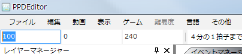

首先，測量目標視頻（的歌曲）的BPM。
BPM表示每分鐘的節拍數，也就是歌曲的速度（數值越大，節奏越快）。
PPDEditor附帶名為BPM測量的BPM測量功能。
如果測量不準，可以試著在Google等網站搜索“曲名 BPM”。
另外，也有像“MixMeister BPM Analyzer”這樣分析mp3音源並自動計算BPM的第三方免費軟件。
不過，這些數值的可信度有限，所以最好還是手動測量一次，確認是否一致。
BPM測量好了。
將測量得到的BPM輸入到工具箱最左邊的文本框中。
（鼠標懸停時會顯示BPM提示的那個文本框）

進行視頻的裁剪設置。
當前視頻的尺寸顯示在屬性窗口中。

PPD的窗口尺寸為16:9（800*450px）。
因此，對於16:9的視頻源無需進行裁剪設置，
但對於其他視頻源，需要進行設置以固定寬高比。
例如，常見的情況是512*384px（寬高比4:3）的視頻上下帶有黑邊。
這種情況下，去掉黑邊後通常就是16:9的視頻源，因此要進行去除黑邊的設置。
首先，選擇 視頻→剪切畫面。

會顯示以下窗口。

計算需要去掉的黑邊的高度。
設黑邊的高度為black_height，視頻的寬度為movie_width，高度為movie_height。
則必須滿足以下方程。
movie_width:movie_height-2*black_height=16:9
⇔16*(movie_height-2*black_height)=9*movie_width
⇔black_height=1/2(movie_height-9/16*movie_width)
……
可以用下面的表單進行計算。
將上面的黑邊高度輸入到剛才剪切窗口的上和下中，然後點擊確定。
視頻就會被裁剪，以16:9顯示。
另一個例子是，對於沒有黑邊的512*384px（4:3）視頻源，想在左右添加黑邊以保持（4:3）的寬高比。
這種情況下，請在左和右中輸入-100。（上和下為0）
顯示設置文件編寫器並輸入信息。

縮略圖開始時間、縮略圖結束時間、開始時間、結束時間，點擊右側的三角並選擇“從時間軸讀取”，
即可輸入視頻的當前時間。
縮略圖開始時間是在PPD的菜單畫面中開始播放的時間。建議設為副歌的開始時間。
縮略圖結束時間是在PPD的菜單畫面中結束播放的時間。設為副歌的結束時間等即可。
開始時間是遊戲中視頻的開始時間。因視頻而異，通常設為0即可。
如果視頻開頭比較突然，可以用-1、-2等推遲視頻的開始。
結束時間是遊戲中視頻的結束時間。設為視頻的結尾即可。
各難度請隨意設定，可以指定自己想顯示的內容。目前一般以★×○（○為數字）的形式居多。
也可以在發佈前再決定。
BPM中請填入測量得到的BPM。
視頻的各剪切值，請輸入剛才設置的視頻裁剪值。如果為0，請全部輸入0。
在這裡，先保存一次工程。
如果是使用新建工程創建的工程，工程已經存在，請按Ctrl+S或選擇 文件→覆蓋保存工程。
以下是未使用新建工程進行設置時的保存方法。
選擇 文件→保存工程。

會顯示對話框，將文件名設為“曲名.ppdproj”並保存。

下次起選擇“覆蓋保存工程”即可覆蓋保存。
另外，打開工程時，請選擇保存的“曲名.ppdproj”。
接下來，放置標記。
下一步